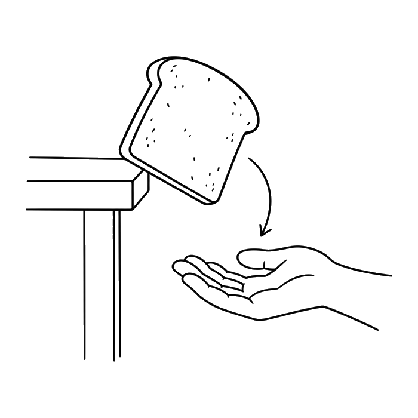

Club dei Disastri
Torna ai bonusCome si fa: ritaglia lungo il tratteggio, piega in due sulla linea a puntini e incolla le due metà, così la tessera diventa rigida. I bollini si ritagliano uno per volta, quando servono.

Club dei Disastri
TESSERA DEL CLUB
Nome
Membro dal:
Gradi: sul retro, un bollino per ogni grado conquistato
Chi trova questa tessera la restituisca: appartiene a un esperto di disastri in formazione.
Le frasi del club
- Qui dentro nessuno ride di una scheda.
- Una copia sola non è una copia.
- Le pagine tagliate si riattaccano.
- Se il perché non si trova, si scrive che non si è trovato.
- Sfortuna ne abbiamo tutti: quello che conta è cosa ci fai.
MOSSA DI EMERGENZA · Fermati. Dagli un nome. Muoviti.
I miei gradi
↑ piega qui ↑
I bollini dei gradi
Ritaglia solo il tondo. Un bollino si incolla solo quando hai spuntato il grado sul cruscotto, cioè quando hai provato davvero almeno due Mosse di quel capitolo. Le Mosse lette non valgono. Non c'è un ordine obbligatorio, come nel libro: se il capitolo tre lo finisci prima del due, incolla prima il tre.
Se un bollino si stacca, riattaccalo con il nastro adesivo e lascialo storto. Al club le cose riattaccate valgono doppio.